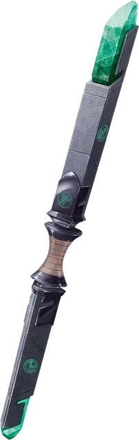

Жезл семи частей
Rod of Seven Parts
Жезл, артефакт (требуется настройка)

Много веков назад война между первобытными существами и богами избороздила планы существования. Лорд демонов по имени паук-волк Миска [miska the Wolf-Spider] в конце концов поставил первозданных врагов на грань уничтожения.
Отчаявшись спасти себя и своих союзников, против Миски восстали могущественные существа-элементали, называемые Князьями Ветра Ааки. Приверженцы концепции закона, герцоги ветра происходят от народа ваати, который когда-то правил многими мирами. Семь герцогов Ветра вплели свою силу в артефакт, названный жезлом закона [rod of law]. Герцоги использовали его, чтобы заточить Миску на плане Пандемониум. В результате жезл распался на семь частей, которые были разбросаны по всей мультивселенной. Таким образом, артефакт стал известен как жезл закона [rod of law].
Владение сломанным жезлом. На жезл нельзя настроиться, пока он сломан. Держа в руках одну часть сломанного жезла, вы знаете общее местоположение следующей за ней части, так как жезл жаждет стать цельным. Действием несколько частей артефакта можно собрать в единое целое или разобрать, хотя частично собранный жезл не приобретает никаких дополнительных особенностей.
Кроме того, пока вы держите одну часть сломанного жезла, вы можете действием наложить заклинание, связанное с этой частью, как указано в таблице «Части жезла». После того как часть жезла была использована для наложения заклинания, она не может быть использована таким образом до следующего рассвета.
| Часть | Заклинание |
| Первая часть | общение [commune] |
| Вторая часть | магические врата [arcane gate] |
| Третья часть | изменение тяготения [reverse gravity] (Сл спасброска 18) |
| Четвёртая часть | регенерация [regenerate] |
| Пятая часть | поиск пути [find the path] |
| Шестая часть | таинственный мираж [mirage arcane] |
| Седьмая часть | подобие [simulacrum] |
Владение всем жезлом. Как только все семь частей будут собраны, существо может настроиться на жезл семи частей. Как только вы сделаете это, то получите следующие преимущества:
- Магическое оружие. Жезл семи частей можно использовать как магический боевой посох, предоставляющий бонус +3 к броскам атаки и урона им.
- Заклинания. У жезла семи частей есть 7 зарядов и он ежедневно восстанавливает 1к4 + 3 заряда на рассвете. Пока вы его держите, то можете действием потратить 1 заряд и наложить любое заклинание из таблицы «Части жезла». Вы также можете действием наложить с его помощью заклинание обнаружение зла и добра [detect evil and good], не тратя зарядов.
- Высший закон. Если ваше мировоззрение не является законным, то ваш взгляд на мир меняется в сторону соблюдения личного кодекса. Вы склонны выполнять обещания, следовать своему слову и придерживаться своих убеждений.
- Уничтожение жезла. Единственный способ уничтожить жезл семи частей — погрузить собранный артефакт в Бездне, прямо в реку лавы. Он должен оставаться в ней в течение пятидесяти лет, прежде чем будет окончательно уничтожен.
Таким образом можно временно уничтожить часть жезла, но через год после разрушения она вновь сформируется и телепортируется в случайное место в мультивселенной.
Владение боевым посохом позволит вам добавлять свой бонус мастерства к броскам атаки при любой атаке, которую вы совершаете с его помощью.